Trip Bible · photo contact sheet (32)
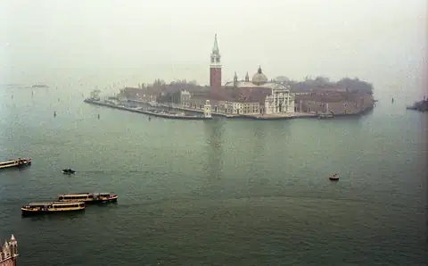
cover San Giorgio Maggiore in November fog: this is Venice in the off-season.Photo: A J Butler · CC BY 3.0 · source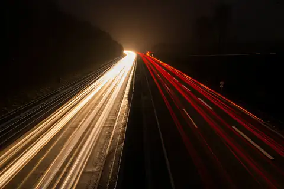
sat-hero The night run: 462 km of autobahn light trails.Photo: Dietmar Rabich · CC BY-SA 4.0 · source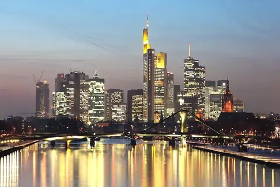
sat-frankfurt Frankfurt's skyline over the Main, where we pick up our second driver.Photo: Thomas Wolf (Der Wolf im Wald) · CC BY-SA 3.0 · source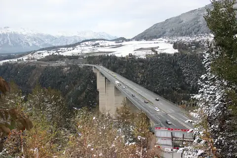
sun-hero Europabrücke on the Brenner motorway, 190 m above the Sill valley.Photo: Steinsplitter · CC BY-SA 3.0 · source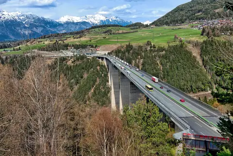
sun-brenner2 The Wipptal from above: the old road to Italy.Photo: Rolf Kranz · CC BY-SA 4.0 · source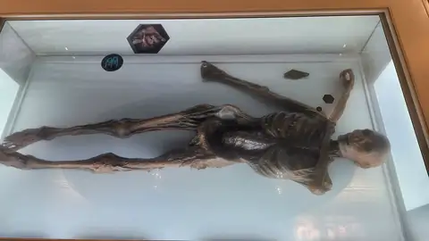
sun-otzi Ötzi, 5,300 years old, killed by an arrow. (Replica in a touring exhibition; the real body is in Bolzano.)Photo: Aspere · CC0 · source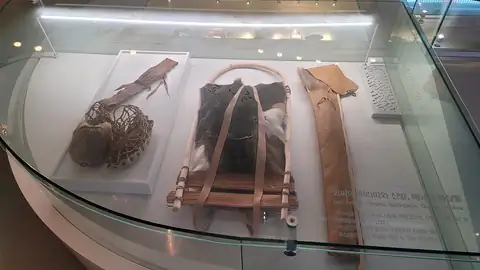
sun-otzi2 His kit: a copper axe, a backpack frame and a quiver. (Replicas.)Photo: Aspere · CC0 · source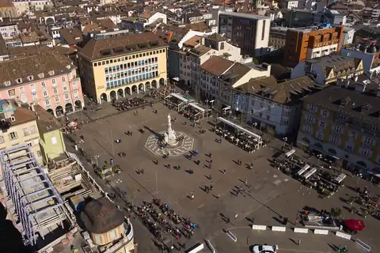
sun-bolzano Waltherplatz, Bolzano's living room.Photo: Aciarium · CC BY-SA 4.0 · source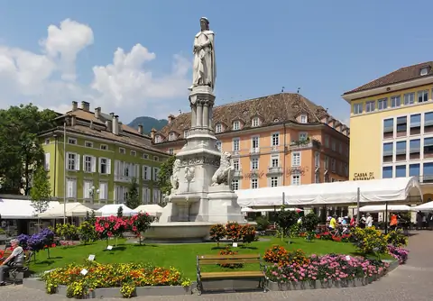
sun-walther The Walther von der Vogelweide statue.Photo: User:Mattes · Public domain · source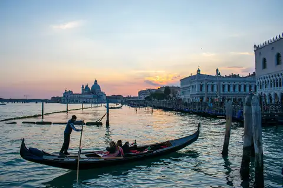
mon-hero A gondola at dusk, with the Salute dome behind it.Photo: Liridon · CC BY-SA 4.0 · source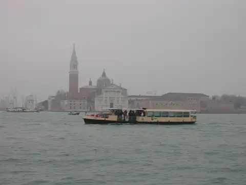
mon-fog A vaporetto crossing the Bacino in the fog.Photo: Lothar John · CC BY-SA 3.0 · source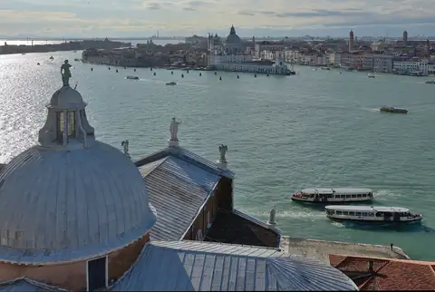
mon-boat The lagoon from above: our boat route from Fusina comes in from the left.Photo: Wolfgang Moroder · CC BY-SA 3.0 · source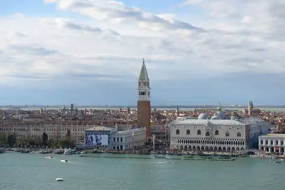
mon-sanmarco The Campanile and the Doge's Palace from the water.Photo: Wolfgang Moroder · CC BY-SA 3.0 · source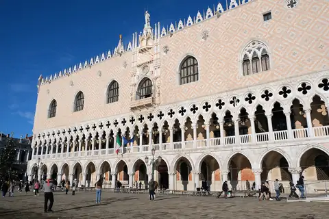
mon-doge The Doge's Palace: 700 years of power in pink and white stone.Photo: kallerna · CC BY-SA 4.0 · source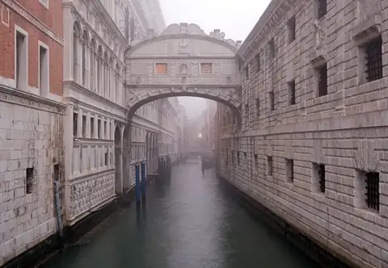
mon-sighs The Bridge of Sighs on a foggy morning. Prisoners crossed it to the cells.Photo: kallerna · CC BY-SA 4.0 · source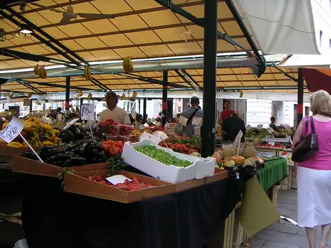
tue-market The Rialto market, Tuesday morning.Photo: Abxbay · CC BY-SA 4.0 · source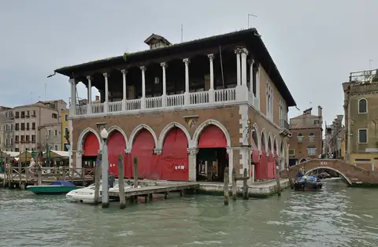
tue-pescheria The Pescheria, the fish hall since 1907, on the Grand Canal.Photo: Wolfgang Moroder · CC BY-SA 3.0 · source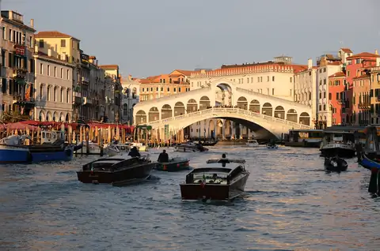
tue-rialto The Rialto Bridge in golden light.Photo: kallerna · CC BY-SA 4.0 · source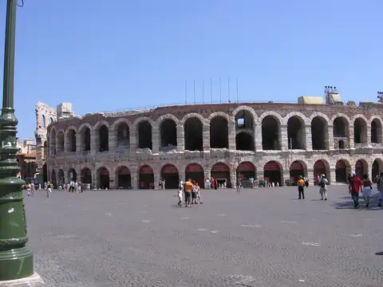
tue-hero The Arena di Verona, 1st century AD: still a working venue.Photo: Avisadehh · CC0 · source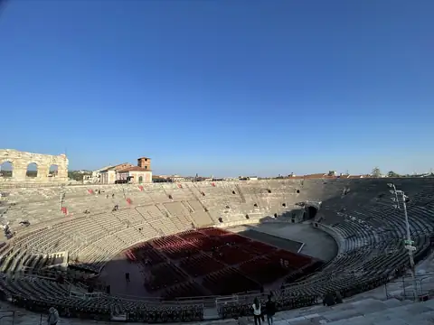
tue-arena Inside the Arena: 44 rows of stone seats.Photo: Photo2023 · CC BY 4.0 · source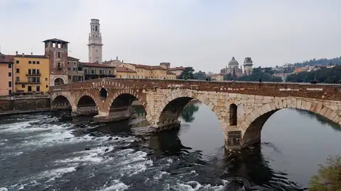
tue-ponte Ponte Pietra over the fast Adige: Roman arches, rebuilt stone by stone after 1945.Photo: CEphoto, Uwe Aranas · CC BY-SA 3.0 · source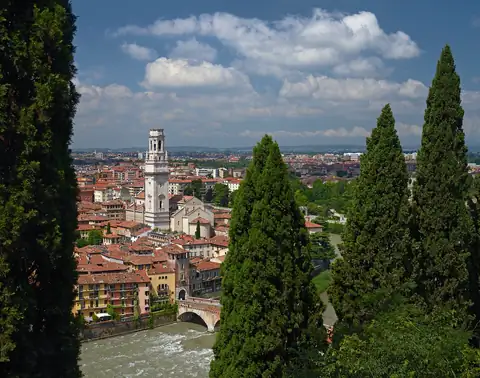
tue-view From the Castel San Pietro steps: our sunset viewpoint.Photo: Ввласенко · CC BY-SA 3.0 · source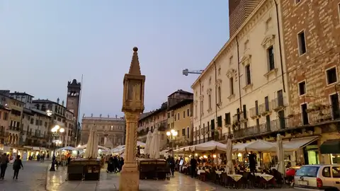
tue-erbe Piazza delle Erbe at night: spritz o'clock.Photo: Orledio · CC BY-SA 4.0 · source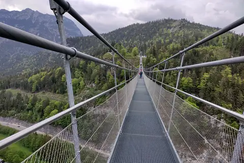
wed-hero highline179: 406 m long, 114 m up, and the floor is a grate.Photo: H.Helmlechner · CC BY-SA 4.0 · source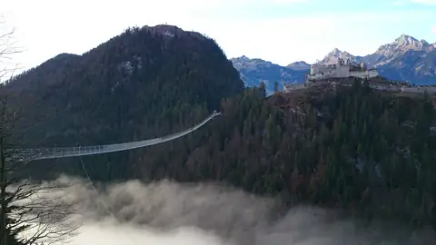
wed-highline2 The bridge and Ehrenberg above a sea of fog.Photo: highline179 · CC BY-SA 4.0 · source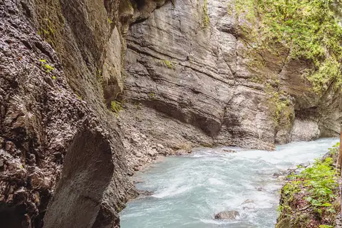
wed-gorge Partnachklamm: the river cut 80 m deep into the limestone.Photo: Flocci Nivis · CC BY 4.0 · source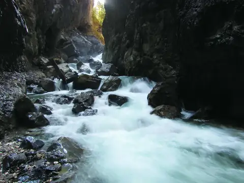
wed-gorge2 The water is loud in here.Photo: Ryan Kruse, U.S. Air Force · Public domain · source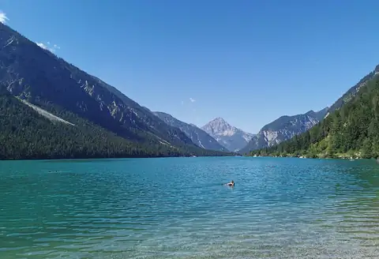
wed-plansee Plansee: the cold plunge. In summer someone swims; in November that's us.Photo: User:Mateus2019 · CC BY 3.0 de · source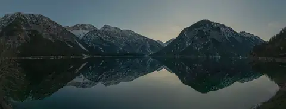
wed-plansee2 Plansee at blue hour.Photo: PtrQs · CC BY-SA 4.0 · source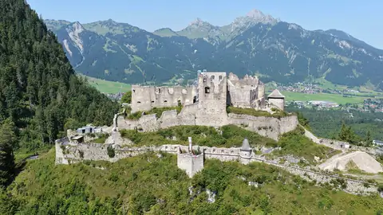
wed-ehrenberg Ehrenberg castle ruins, our blue-hour backup.Photo: C.Stadler/Bwag · CC BY-SA 4.0 · source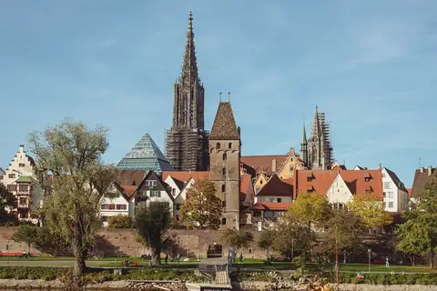
thu-hero Ulm Minster: the tallest church spire in the world, 161.5 m.Photo: Flocci Nivis · CC BY 4.0 · source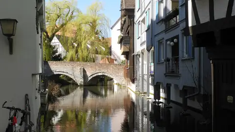
thu-fischer The Fischerviertel: half-timbered houses over the Blau.Photo: Franzfoto · CC BY-SA 3.0 · source